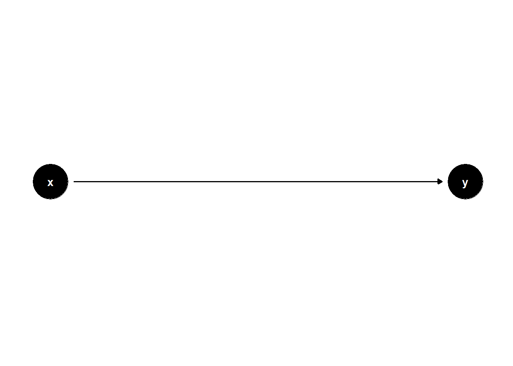
Directed Acyclic Graph (DAG)
What is a Directed Acyclic Graph (DAG)?
A Directed Acyclic Graph (DAG) is a visual tool to represent putative causal relationships between variables in observational research. In the case of etiological epidemiology, we are interested in assessing the causal effect of an exposure on an outcome. Before embarking on statistical analyses DAGs can help us map our prior knowledge and assumptions about the various mechanisms that influence or explain the causal effect we are interested in. DAGs can help to guide us in the design of our study, the choice of which data to collect, and in how to set up our statistical analysis to adequately control for known sources of bias and confounding.
In preparation for our workshop on mediation analysis, it is important that you understand the basic concepts and notations used when drawing and communicating about our causal assumptions using DAGs.
Tip: Read this reference for more background!
This brief introduction to DAGs follows an excellent tutorial. Read this reference to get a bit more background than we can cover here.
Simple example
DAGs help us tell stories about causes and effects. Let’s think of a simple example:
X represents a light switch (the cause)
Y represents whether a light bulb is on or off (the effect)
When we flip the switch (X):
Switch up → Light on
Switch down → Light off
This simple cause-effect relationship can be drawn as: X → Y
DAGs consist of two basic elements:
Nodes: Points representing variables (like x and y)
Edges: Arrows showing relationships between variables (like x → y)
A directed path (often simply referred to as a path) is any arrow-based route between two variables on the graph.
Now let’s introduce another variable z into the graph. The path is x→y→z .
- Ancestor: A variable that influences another (x is an ancestor of y)
- Descendant: A variable influenced by another (z is a descendant of y)
We can use DAGs to illustrate some key termiology in epidemiology.
confounder:
A confounder is represented by a node (z) with arrows pointing toward both x and y, indicating it is an ancestor of both the exposure x and the response y.
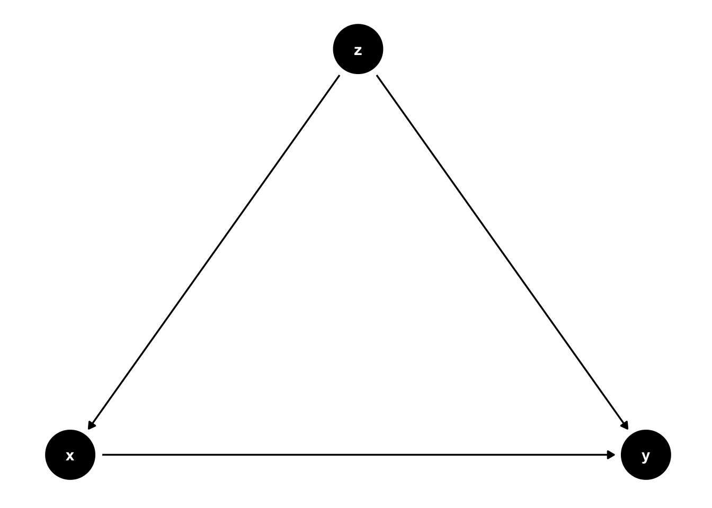
mediator:
A mediator is a variable that lies on the causal pathway between the exposure (X) and the outcome (Y). In a DAG, it is a descendant of X and an ancestor of Y, meaning that X influences Y, at least in part, through the mediator (Z).
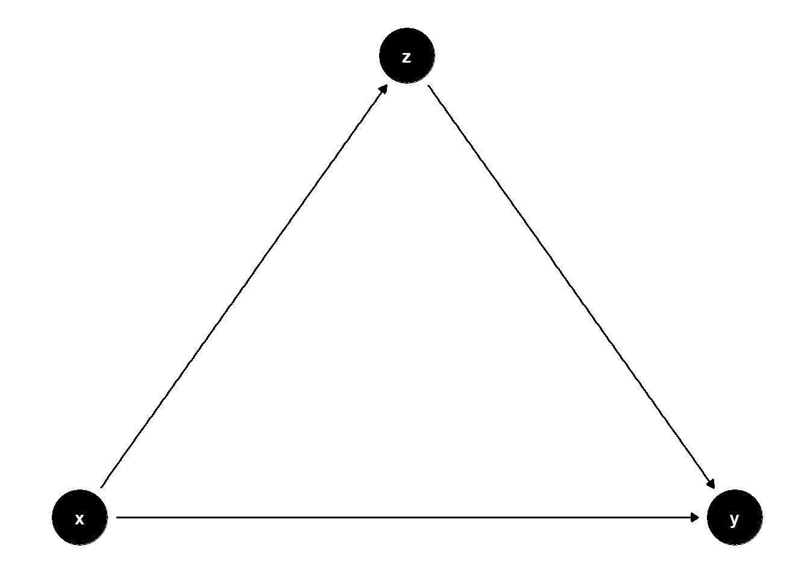
collider:
A collider is a variable with both edges pointing into the node. It is a descendent of both the exposure x and the response y.
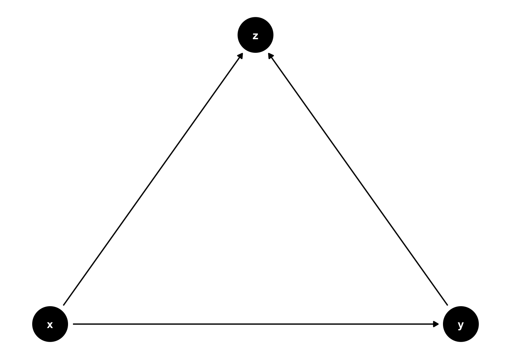
Can you think of an example of collider stratification bias?
Consider the relationship between body mass index (BMI), Type 2 Diabetes (T2D), and mortality. T2D lies on the pathway between BMI and mortality, meaning BMI can influence mortality through T2D. However, other unknown factors (U), such as genetic predisposition, may also affect the risk of developing T2D. Graphically, T2D is a descendant of both BMI and U, making it a collider when we analyze the causal effect of BMI on mortality.
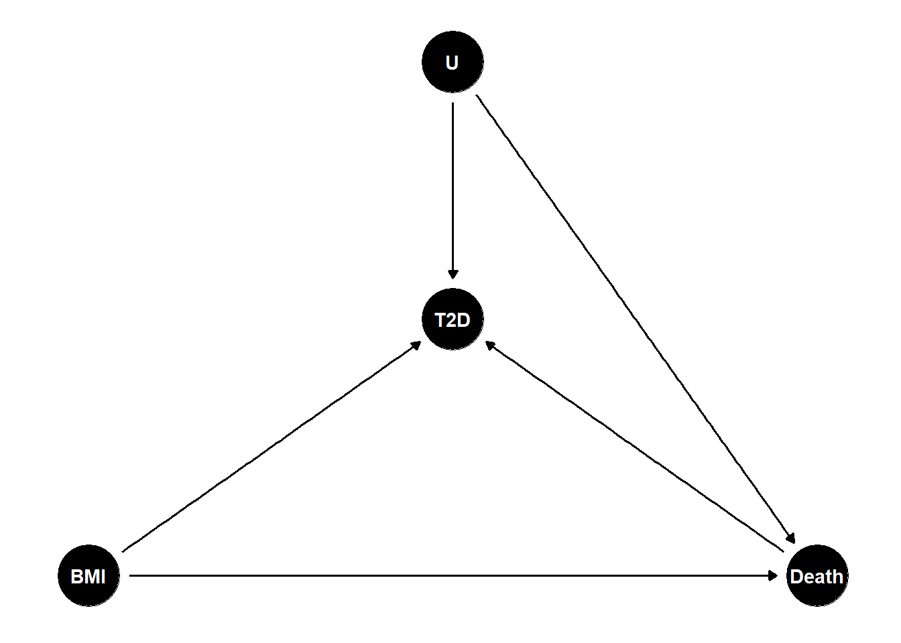
Final Note:
A DAG is acyclic, meaning it does not contain any feedback loops. In other words, a variable cannot be its own descendant. The examples discussed so far are all valid DAGs because they maintain this property. However, the following example is not a DAG, as it contains a cycle:
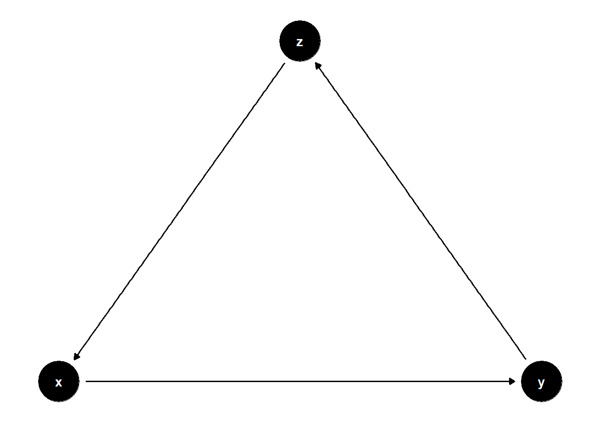
Create your own DAG
There are a number of tools we can use to create and analyze DAGs. DAGitty is a popular tool for creating and DAGs. Notably, DAGitty has a graphical interface we can use to create, edit, and analyze DAGs directly in our web browser. We can access DAGitty in our browser by navigating to https://www.dagitty.net/ and clicking on Launch DAGitty online in your browser.
You can also use R package ggdag to create DAGs.
# Load the packages we will need below
library(dplyr, warn.conflicts = FALSE)
library(ggdag, warn.conflicts = FALSE)
library(ggplot2)# Create a DAG called chain
chain <- dagify(
y ~ x # The form is effect ~ cause
)
# Print the value stored in chain to the screen
chaindag {
x
y
x -> y
}# Plot the chain dag and print it to the screen
ggdag(chain)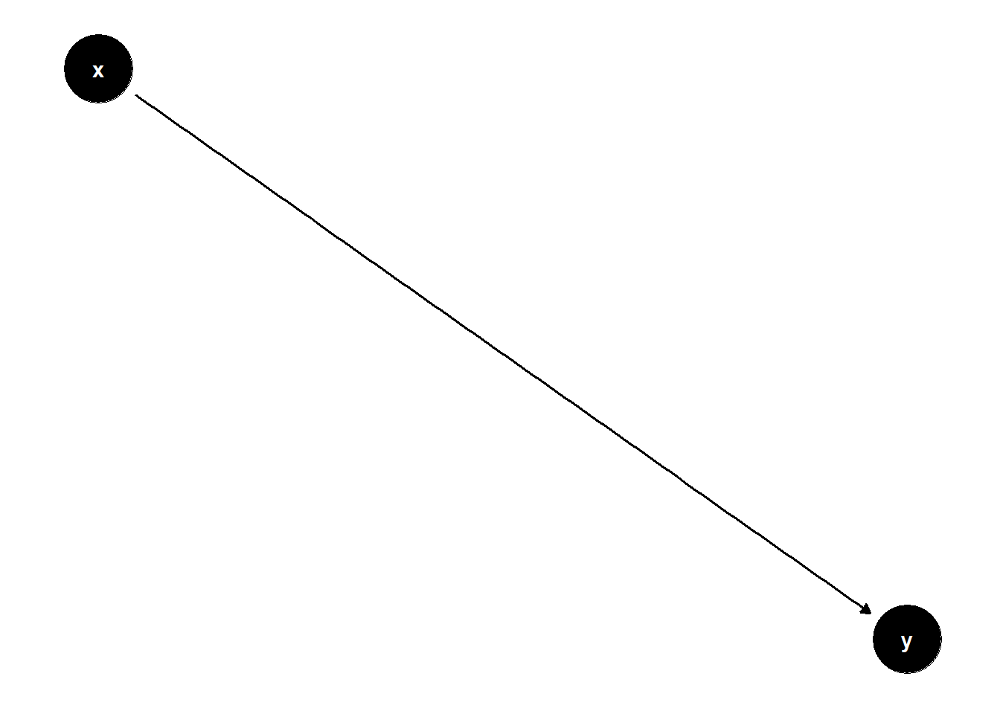
Use DAGs to help with your research question
Suppose your research question is: What is the relationship between physical activity and Type 2 Diabetes (T2D)? We hypothesize that increased physical activity reduces the risk of developing T2D.
Exposure: Physical activity
Outcome: Type 2 Diabetes
The dataset includes age, sex, ethnicity, physical activity, and T2D. Using these variables, construct a Directed Acyclic Graph (DAG) to illustrate potential causal relationships and identify possible confounders or mediators. You may also consider using U to represent unknow factors.
Compare and disscuss your DAG with your peers to identify similarities, differences, and potential improvements.
How would the DAG change if you are at study planning phase ?
During the study planning phase, the structure of the DAG might evolve based on additional considerations. For example:
Identifying potential confounders: These are variables that may affect both the exposure (physical activity) and the outcome (Type 2 diabetes), and should therefore be measured and adjusted for. Potential confounders could include factors such as diet, neighborhood environment, income, and genetic predisposition.
Take home message
DAGs require researchers to explicitly state the assumptions about causal links.
DAGS help researchers identify whether causal effects can be estimated, and, what we need to control to obtain unbiased results.
The solution is not always as you thought it was…
d-Separation Rules
If you are interested in Causal Inference, please continue with the materials of d-separation rules, which is essential to estimate average causal effects.
As we can see from the type 2 diabetes example, there are several confounding factors on the path from exposure (physical activity) to outcome (T2D), which confounded the relations and biased the estimate. Therefore, we would like to deconfound our estimates of effect by conditioning on variables. In the DAG, it means we block the backdoor path from x to y. There are different approaches to condition, such as restriction, matching, stratification, weighting.
The rules of d-separation will help with with interpretations:
Ruel 1: If there are no variables being conditioned on, a path is blocked if and only if two arrowheads on the path collide at some variable on the path.
In this example, the path x → z ← u → y is BLOCKED because z is a collider.
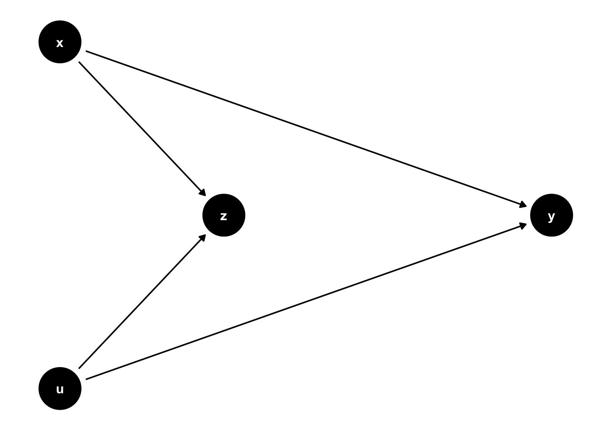
Rule 2. Any path that contains a non-collider that has been conditioned on is blocked.
In the example, there is a backdoor path: x ← z → y , which is an open path, Without conditioning on z, this path could introduce a spurious association between x and y. However, the backdoor path can be blocked by conditioning on z (through stratifying or adjustment). In epidemiology termss: conditioning on z removes the spurious association, making x and y independent.

Rule 3. A collider that has been conditioned on does not block a path.
z is a collider in the example (2 arrows pointing at the variable z)
It is a closed path, you do not need to condition on z. However, the path can be open by conditioning on Z.
Epidemiology words: x and y becomes dependent (associated) by conditioning on Z as you open the backdoor path.
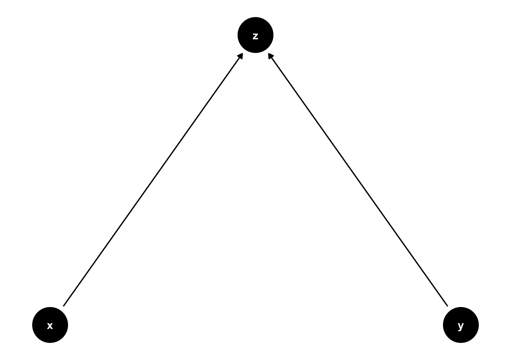
Rule 4. A collider that has a descendant that has been conditioned on does not block a path.
In the figure below, the path x -> z <- y is open because m is a descendant of a collider (z) and it is being conditioned on.
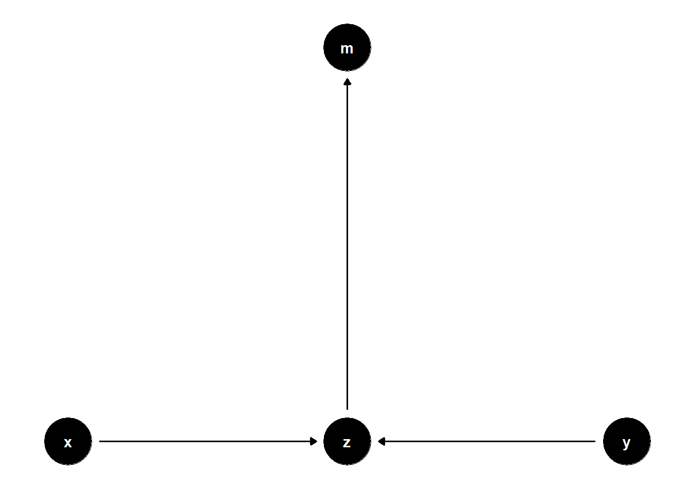
QUIZ:
Which variables to adjust for if i am interested in the effect of X on Y?
tidy_ggdag <- dagify(
y ~ x + z2 + w2 + w1,
x ~ z1 + w1 + w2,
z1 ~ w1 + v,
z2 ~ w2 + v,
w1 ~ ~w2, # bidirected path
exposure = "x",
outcome = "y"
) %>%
tidy_dagitty()
ggdag(tidy_ggdag) +
theme_dag()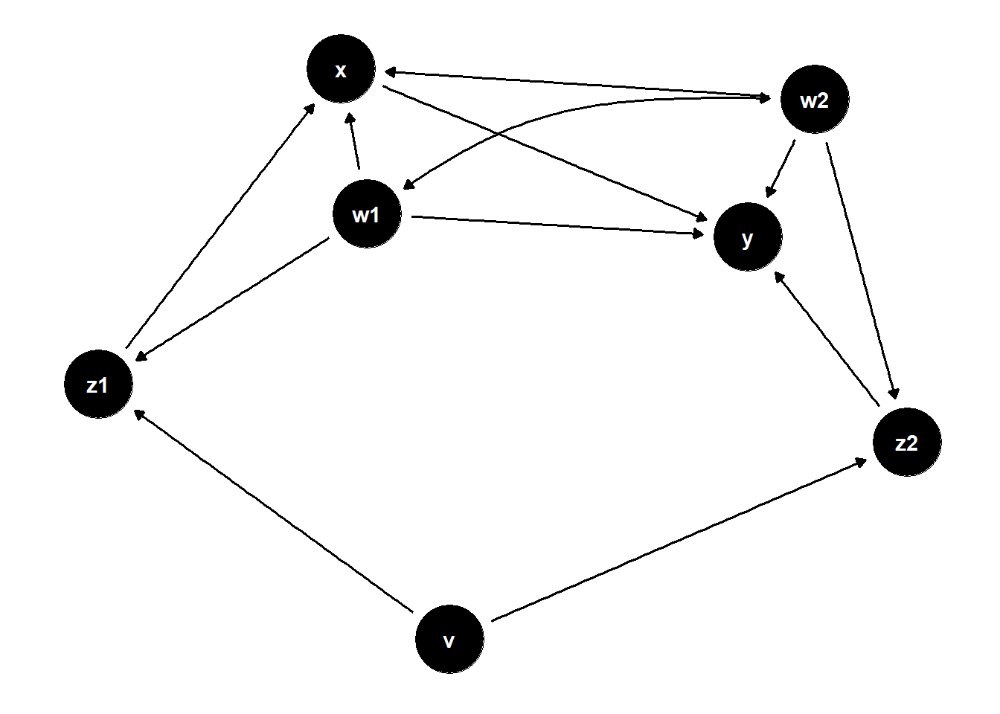
Basic DAG terminology
node: a variable
edge: a causal relationship, represented by an arrow
exposure: it is the variable you are interested to understand its causal effect, usually represented by X
response: the outcome variable, usually represented by Y
ancestors: nodes that are ‘upstream’ from a particular variable
decendents: nodes that are ‘downstream’ from a particular variable
Recommended reading
Rohrer, J. M. (2017). Thinking Clearly About Correlations and Causation: Graphical Causal Models for Observational Data.
Pearl, J., & Mackenzie, D. (2018). The book of why: the new science of cause and effect. Basic Books.
Roberts, S. (2018). Robust, causal and incremental approaches to investigating linguistic adaptation. Frontiers in Psychology, 9, 166.